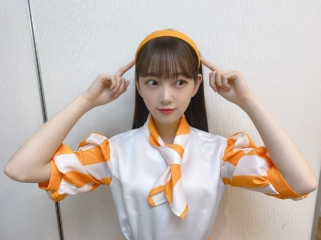
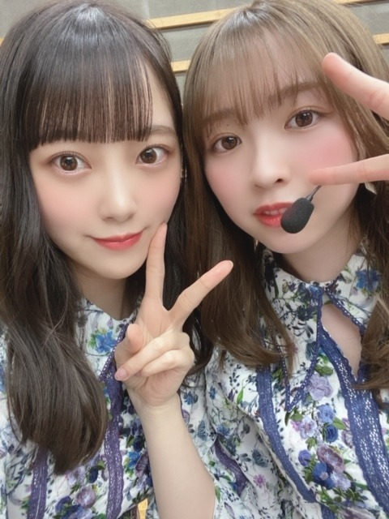

2020/0322SunauPAYマーケット
au PAY マーケットのCMに出させていただいています!
たまたまサイリウムカラーの
オレンジx白が衣装で嬉しかったぁ☺︎


衣装さんが堀ちゃんはカチューシャが似合うから
と言ってカチューシャをスタイリングしてくださいました!
嬉しい...!
愛を感じました...
カチューシャ大好きです☺︎
au PAY マーケットで皆さんもぜひお買い物してくださいね!
そして今日は乃木坂工事中です~
予告の顔凄かったですね...
次の日全身筋肉痛でした...
見てください~

おんぷちゃんヘアメンバーからも好評で嬉しい♩
でははは
2020/03/22 11:12
コメント(255)
独創ある画がもっとみたくなった
未央奈ちゃんブログ更新ありがとう！
さくらちゃんとあやめちゃんとでんちゃんと同じ愛知県出身の覇王です！
auPAYのめちゃくちゃ可愛くて、とても似合ってるよ！
未央奈ちゃんのペンライトカラーだからめっちゃ嬉しいよ！
アメトーク、FNS見たよ！
両方ともめっちゃ最高だったよ！
今日の乃木坂工事中楽しみにしてるよ！
これからも頑張ってね！
応援してるよ！
さくらちゃんとあやめちゃんとでんちゃんと同じ愛知県出身の覇王です！
auPAYのめちゃくちゃ可愛くて、とても似合ってるよ！
未央奈ちゃんのペンライトカラーだからめっちゃ嬉しいよ！
アメトーク、FNS見たよ！
両方ともめっちゃ最高だったよ！
今日の乃木坂工事中楽しみにしてるよ！
これからも頑張ってね！
応援してるよ！
未央奈さん、今日ブログ更新したのを読ませて貰いましたよ。
auペイのCM衣装、良く似合いますね。
花粉症 の方は本当につらくて大変なようですね。
(^o^)
CRYSTALより。
auペイのCM衣装、良く似合いますね。
花粉症 の方は本当につらくて大変なようですね。
(^o^)
CRYSTALより。
未央奈ちゃんすち過ぎる
乃木中楽しみ!
auPAYの中の人、未央奈のこと良く分かってるな〜笑
カチューシャ似合いすぎだよ笑
乃木中待機してます〜。
次回予告が完全に未央奈回だったから楽しみ！
いつも元気をありがとう〜。
カチューシャ似合いすぎだよ笑
乃木中待機してます〜。
次回予告が完全に未央奈回だったから楽しみ！
いつも元気をありがとう〜。
俺の両親がauだからぜひ乃木坂の景品？当てたいです！
それにしても乃木坂のイメージが紫だからオレンジって結構珍しいねー
ほんとに毎日テレビで乃木坂見てるような気がします！
つよし
それにしても乃木坂のイメージが紫だからオレンジって結構珍しいねー
ほんとに毎日テレビで乃木坂見てるような気がします！
つよし
堀ちゃんのポーカーフェイスからの限界の時のやつ、めっちゃ面白かったです笑
さすが！笑
さすが！笑
工事中見ました！！！！未央奈さん本当に頑張ったね、感動しました(けど面白いからめっちゃ笑いました
大好き
大好き
au PAY マーケットみおな良く似合う～～、よーし買うぞー、買って買って買いまくってやる！！
こんばんは。ブログ更新ありがとうございます。
au PAYの衣装可愛いですね！！オレンジのカチューシャもよく似合ってます。CMはようつべでも見られるかな？
乃木中はこれから見ます。私はTV番組は必ず録画したのを見ます。
ではまた。
au PAYの衣装可愛いですね！！オレンジのカチューシャもよく似合ってます。CMはようつべでも見られるかな？
乃木中はこれから見ます。私はTV番組は必ず録画したのを見ます。
ではまた。
未央奈ちゃん、乃木坂工事中は予約録画した❗
未央奈ちゃんが神輿を必死に担いでたけど、支えきれず
倒れてしまい涙を流してた姿が同期メンバーのために
頑張ったけどうまくいかなかったことへの悔しさが凄く伝わってとても素晴らしく感じたよ

怪我しなくて良かった
カーチューシャも未央奈ちゃんに似合ってて
とても可愛い
恐らく様々なお仕事で忙しい中、一週間くらい前からブログ更新ほぼ毎日お疲れ様です
未央奈ちゃんが神輿を必死に担いでたけど、支えきれず
倒れてしまい涙を流してた姿が同期メンバーのために
頑張ったけどうまくいかなかったことへの悔しさが凄く伝わってとても素晴らしく感じたよ
怪我しなくて良かった
カーチューシャも未央奈ちゃんに似合ってて
とても可愛い
恐らく様々なお仕事で忙しい中、一週間くらい前からブログ更新ほぼ毎日お疲れ様です
工事中見たよー
お神輿持ち上げるの大変そうだった笑
でも、何度も持ち直す未央奈さんの忍耐力に惚れ直しました
終わった後も先輩として見せた涙も素晴らしかったです！
auユーザーだから未央奈さんがCMなんて嬉しい
もちろん、auPAYマーケット使ってるよー
未央奈さんのカチューシャはとても上品に見えて好きです
CM楽しみ
お神輿持ち上げるの大変そうだった笑
でも、何度も持ち直す未央奈さんの忍耐力に惚れ直しました
終わった後も先輩として見せた涙も素晴らしかったです！
auユーザーだから未央奈さんがCMなんて嬉しい
もちろん、auPAYマーケット使ってるよー
未央奈さんのカチューシャはとても上品に見えて好きです
CM楽しみ
未央奈、カチューシャ似合うね可愛いね 工中みたよ❤️またね ではでは❤️
みおな

みりあ
みりあ
未央奈～ こんにちは
ブログ更新ありがとうございます。
auPAYマーケットのCM、可愛いですね。特に衣装＆カチューシャ、しかもオレンジ＆白というのも、できすぎ？ 楽しみにしたいと思います。
そして、乃木坂工事中、もちろん見ましたよ。先週の予告で、ものすごい「顔」が話題になっていましたが、よ～くわかりました。必死で頑張った姿、特に途中で持ち直した時は思わず拍手でしたが、最後は風船を割らずに前へ通り過ぎるというまさかの展開、結果的には、圧倒的に大差をつけられてしまいましたね。
最後に３ポイントでも受けて立つという先輩の姿、２～４期生合わせての若さも及びませんでしたが、最後の未央奈の涙から、未央奈は２期生の先頭だけでなく、２～４期生の先頭としての自覚と責任感があるんだと改めて感心しました。
その気持ち、これからもよろしくお願いしますね。
いよいよ新曲の発売です。楽しみでなりません。
ブログ更新ありがとうございます。
auPAYマーケットのCM、可愛いですね。特に衣装＆カチューシャ、しかもオレンジ＆白というのも、できすぎ？ 楽しみにしたいと思います。
そして、乃木坂工事中、もちろん見ましたよ。先週の予告で、ものすごい「顔」が話題になっていましたが、よ～くわかりました。必死で頑張った姿、特に途中で持ち直した時は思わず拍手でしたが、最後は風船を割らずに前へ通り過ぎるというまさかの展開、結果的には、圧倒的に大差をつけられてしまいましたね。
最後に３ポイントでも受けて立つという先輩の姿、２～４期生合わせての若さも及びませんでしたが、最後の未央奈の涙から、未央奈は２期生の先頭だけでなく、２～４期生の先頭としての自覚と責任感があるんだと改めて感心しました。
その気持ち、これからもよろしくお願いしますね。
いよいよ新曲の発売です。楽しみでなりません。
こんばんは！
au PAY マーケットのCM！おめでと〜
ほんとびっくり。
そういえばauってオレンジ×白だったね。衣装もかわいい！
衣装さんさすが！わかってらっしゃる。
カチューシャよきよき♪
餃子推し。笑
さすがっす。
乃木中おもろかったー！
すんごいがんばってた。笑
神輿だもんね、すごいわ。
チームとしての責任感があったんだね！まさか泣いちゃうとは。笑
おんぷちゃんヘアめっっちゃかわいい！！！
すき〜
大食いシスターズもよき。(^-^)
ではではは。おやすみー☺️
明日からもがんばりましょ〜
au PAY マーケットのCM！おめでと〜
ほんとびっくり。
そういえばauってオレンジ×白だったね。衣装もかわいい！
衣装さんさすが！わかってらっしゃる。
カチューシャよきよき♪
餃子推し。笑
さすがっす。
乃木中おもろかったー！
すんごいがんばってた。笑
神輿だもんね、すごいわ。
チームとしての責任感があったんだね！まさか泣いちゃうとは。笑
おんぷちゃんヘアめっっちゃかわいい！！！
すき〜
大食いシスターズもよき。(^-^)
ではではは。おやすみー☺️
明日からもがんばりましょ〜
みおな
今日もお疲れ様です
auPAYマーケットのCM見ました
みおなだけ、びっくりしなかったね笑
カチューシャ似合ってて可愛かったです
他のメンバーもさくちゃんのクラリネット、あやめちゃんの書道、久保ちゃんのえんぴつ乗せとか何気に特技を活かしてて面白かったです笑（さくちゃんのクラリネットで、えー！が特によかった）
乃木中も見ました
みおなめっちゃ頑張ってたね笑
最初はポーカーフェイスだったのに、途中から血管を確認できるくらい、目がカッて開いてて久々にみおなの見せ場が見れました
負けたけど途中で持ち直した時とか、よかったです
お疲れ様でした（それにしても1期生めっちゃ強かったね笑）
急ですが1つ迷ってる事があります
みおなのモバメを取ろうかどうか（みおなの助言があれば迷いは完全になくなるけど、どうすればいいと思う？）
明日から頑張りましょう
ありがとうございました
今日もお疲れ様です
auPAYマーケットのCM見ました
みおなだけ、びっくりしなかったね笑
カチューシャ似合ってて可愛かったです
他のメンバーもさくちゃんのクラリネット、あやめちゃんの書道、久保ちゃんのえんぴつ乗せとか何気に特技を活かしてて面白かったです笑（さくちゃんのクラリネットで、えー！が特によかった）
乃木中も見ました
みおなめっちゃ頑張ってたね笑
最初はポーカーフェイスだったのに、途中から血管を確認できるくらい、目がカッて開いてて久々にみおなの見せ場が見れました
負けたけど途中で持ち直した時とか、よかったです
お疲れ様でした（それにしても1期生めっちゃ強かったね笑）
急ですが1つ迷ってる事があります
みおなのモバメを取ろうかどうか（みおなの助言があれば迷いは完全になくなるけど、どうすればいいと思う？）
明日から頑張りましょう
ありがとうございました
改めて、きゃわいい～！
堀ちゃんこんばんは！
乃木坂工事中見ましたー！
本気の姿に、申し訳ありませんがめちゃくちゃ笑わせてもらいました！笑
表情や動きが完全にアスリートだったじゃないですか〜( ´ ▽ ` )笑
ゲームの内容的に、ただ持ち上げて耐える時間で盛り上がりに欠けるのかなと思ったら、堀ちゃんの奮闘で大盛り上がりでしたね！
メンバーのみんなやバナナマンさんが楽しそうだったのが印象的でした、堀ちゃんは1人でも場の空気を変えられる存在です(o^^o)
ライブや歌番組でのアーティストとしての姿には胸が熱くなりますし、バラエティで全力な姿には心が明るくさせてもらっています！
こんなに色んな幅で楽しませてくれる人は中々いません、本当に僕にとって特別な存在です(o^^o)
お疲れ様でした、腰はもう大丈夫でしょうか？お大事にしてくださいね(^^)
そしてFNS特別音楽祭も見ました！
おんぷちゃんヘア、いつもと違う雰囲気で可愛かったですー！(o^^o)
ポニテとかハーフアップのときはシュッとしたシャープな可愛さを感じるんですが、おんぷちゃんヘアは結んだところ以外にも、フワッとした柔らかい可愛さがありました( ´ ▽ ` )♩
チョンってワンポイント結ぶだけで雰囲気だいぶ変わるんですね〜、堀ちゃんは色んな堀ちゃんを見せてくれるので毎回見ていて新鮮な楽しさを感じます(o^^o)
これからも色んな姿を楽しみにしています！(^^)
ちなみに2つ前の記事の話題で恐縮ですが洋楽のお話
We Own the Night/The Wanted
What Makes You Beautiful/One Direction
Someone You Loved/Lewis Capaldi
僕の特に好きな曲です、もし聴いたことがない曲があったら聴いてみてもらえるたら嬉しいです(o^^o)
アメトーークの感想もコメントしたいですが、話題が多すぎて…やむを得ず次回にします( ´ 〜 ` )
でははは！またコメントさせてくださいー！
乃木坂工事中見ましたー！
本気の姿に、申し訳ありませんがめちゃくちゃ笑わせてもらいました！笑
表情や動きが完全にアスリートだったじゃないですか〜( ´ ▽ ` )笑
ゲームの内容的に、ただ持ち上げて耐える時間で盛り上がりに欠けるのかなと思ったら、堀ちゃんの奮闘で大盛り上がりでしたね！
メンバーのみんなやバナナマンさんが楽しそうだったのが印象的でした、堀ちゃんは1人でも場の空気を変えられる存在です(o^^o)
ライブや歌番組でのアーティストとしての姿には胸が熱くなりますし、バラエティで全力な姿には心が明るくさせてもらっています！
こんなに色んな幅で楽しませてくれる人は中々いません、本当に僕にとって特別な存在です(o^^o)
お疲れ様でした、腰はもう大丈夫でしょうか？お大事にしてくださいね(^^)
そしてFNS特別音楽祭も見ました！
おんぷちゃんヘア、いつもと違う雰囲気で可愛かったですー！(o^^o)
ポニテとかハーフアップのときはシュッとしたシャープな可愛さを感じるんですが、おんぷちゃんヘアは結んだところ以外にも、フワッとした柔らかい可愛さがありました( ´ ▽ ` )♩
チョンってワンポイント結ぶだけで雰囲気だいぶ変わるんですね〜、堀ちゃんは色んな堀ちゃんを見せてくれるので毎回見ていて新鮮な楽しさを感じます(o^^o)
これからも色んな姿を楽しみにしています！(^^)
ちなみに2つ前の記事の話題で恐縮ですが洋楽のお話
We Own the Night/The Wanted
What Makes You Beautiful/One Direction
Someone You Loved/Lewis Capaldi
僕の特に好きな曲です、もし聴いたことがない曲があったら聴いてみてもらえるたら嬉しいです(o^^o)
アメトーークの感想もコメントしたいですが、話題が多すぎて…やむを得ず次回にします( ´ 〜 ` )
でははは！またコメントさせてくださいー！
みおな、こんばんは。更新ありがとう！ 近況報告ありがとうございます。 では、毎日みおなに良いこと沢山ありますように！ おやすみおな！！
堀さん、こんばんは。ブログ更新してくれて嬉しいです。
カチューシャ姿とてもお似合いですね。
おんぷ？も新鮮で可愛いです。堀さんは髪型のレパートリーが本当に多いですね。
乃木坂工事中みましたよ。しっちゃかめっちゃかで凄く笑いました。毎回CM前に堀さんの叫びが流れてましたね。
後輩を率いてるから無理する不器用な感じとか、ポーカーフェイスの後に泣き顔見せることになる所とか、堀さんがあまりにも可哀らしすぎて僕は気絶するかと思いました。普段は気丈にふるまってる堀さんが神輿のせいで泣いてたので守りたい欲がとても喚起されました。ゲーム企画を一生懸命やる堀さんが大好きです。
あとアンコールの時のとてつもない美しさの堀さんがまた見れて嬉しかったです。
花粉症つらいみたいですけど、薬飲んだり桜見たりでなんとかやり過ごしてくださいね。
カチューシャ姿とてもお似合いですね。
おんぷ？も新鮮で可愛いです。堀さんは髪型のレパートリーが本当に多いですね。
乃木坂工事中みましたよ。しっちゃかめっちゃかで凄く笑いました。毎回CM前に堀さんの叫びが流れてましたね。
後輩を率いてるから無理する不器用な感じとか、ポーカーフェイスの後に泣き顔見せることになる所とか、堀さんがあまりにも可哀らしすぎて僕は気絶するかと思いました。普段は気丈にふるまってる堀さんが神輿のせいで泣いてたので守りたい欲がとても喚起されました。ゲーム企画を一生懸命やる堀さんが大好きです。
あとアンコールの時のとてつもない美しさの堀さんがまた見れて嬉しかったです。
花粉症つらいみたいですけど、薬飲んだり桜見たりでなんとかやり過ごしてくださいね。
今日も乃木坂工事中は面白かった。
みんな楽しそうな顔なのが良い。
みんな楽しそうな顔なのが良い。
「工事中」毎週観てるよ。めっちゃ面白かったよ。
みおなちゃん、大好きです
未央奈、おはよう❤️愛してる 可愛いね またね ではでは❤️
大好きな未央奈ちゃんおはよう!アメトーークも乃木坂工事中見たよ(乃木坂工事中は、私の住んでいる所は放送されてないので、You Tubeで見たよ)やっぱり未央奈ちゃんベレー帽が凄く似合うなあと前からずっと思っていました。特にアメトーークで被ってたビンク凄くかわいい!芸人さんよりも笑わせていたと思います。乃木坂工事中の神輿耐久バトルで残念ながら負けちゃいましたが、全力でやった結果だし、きついなか少しでも長く頑張ったと思います。全力でやったからこそ、後輩に申しわけなく、あの涙涙につながったと思います。個人的には、未央奈ちゃんとれんたんが隣に並んでいたのが嬉しい!未央奈ちゃんとれんたんが特に大好きだから。本物の姉妹みたい!いつか、乃木坂４６の「の」のMC先輩として、共演してほしいなあ。水曜日でいよいよ未央奈ちゃんレコメンレギュラーとしてのラストだね。なんだか凄く寂しいよぉ そう思っているレコメンリスナーさん沢山いるよ。これからも新レコメンレギュラーの真佑ちゃんを支えてあげてね!大好きやおー
マウスのcmも可愛かった(*￣∀￣*)~゜
未央奈も凄いアート描くなぁ笑
未央奈良く頑張ってた！！
面白かったけど笑
可愛い(*ﾟOﾟ*)
未央奈良く頑張ってた！！
面白かったけど笑
可愛い(*ﾟOﾟ*)
ブログ更新、ありがとうございます。
乃木坂工事中、見ました。ケガしないでよかったです。
おみこしの台が曲がっていました。
おみこしが体に当たらなくてホントによかったです。
勝った１期生の風船が割れるのはお約束でしたが・・・
では。
乃木坂工事中、見ました。ケガしないでよかったです。
おみこしの台が曲がっていました。
おみこしが体に当たらなくてホントによかったです。
勝った１期生の風船が割れるのはお約束でしたが・・・
では。
未央奈ちゃん更新ありがとー！
au payのCM見たよー！
衣装めっちゃ可愛いね！
カチューシャも似合ってるよ！
みんながそれぞれリアクションをとる姿も可愛いくて好き。
今回あらためて思ったことは、
未央奈ちゃんはどのヘアスタイルも服も似合うなーってこと。
やっぱ未央奈ちゃんだな！
だ！な！
au payのCM見たよー！
衣装めっちゃ可愛いね！
カチューシャも似合ってるよ！
みんながそれぞれリアクションをとる姿も可愛いくて好き。
今回あらためて思ったことは、
未央奈ちゃんはどのヘアスタイルも服も似合うなーってこと。
やっぱ未央奈ちゃんだな！
だ！な！
未央奈ちゃん、おはよう。
乃木中は完全に未央奈回だったね。
あれは全身筋肉痛になるなぁ。
バラエティを数多くこなしてきた
からこそのリアクション。
後輩ちゃんも勉強になったんじゃない？
おとなしい子が多いから。
乃木中のスタッフさんも信頼していて
愛のあるイジリをしてるよね。
そういう扱いをしてるメンバーって
数少ないからスゴイんだと思う。
おかげで楽しい時間を過ごせたよ。
花粉症は本当に大変そうで…
なったことが無いから声の掛けようが
ないなぁ。喉がかゆくなるなんて
想像かつかない。代われるものなら
代わってあげたいけども…
ご愁傷様です。
では。
乃木中は完全に未央奈回だったね。
あれは全身筋肉痛になるなぁ。
バラエティを数多くこなしてきた
からこそのリアクション。
後輩ちゃんも勉強になったんじゃない？
おとなしい子が多いから。
乃木中のスタッフさんも信頼していて
愛のあるイジリをしてるよね。
そういう扱いをしてるメンバーって
数少ないからスゴイんだと思う。
おかげで楽しい時間を過ごせたよ。
花粉症は本当に大変そうで…
なったことが無いから声の掛けようが
ないなぁ。喉がかゆくなるなんて
想像かつかない。代われるものなら
代わってあげたいけども…
ご愁傷様です。
では。
そうそう！予告の未央奈の顔がすごかった
工事中、楽しみでーす。
今日も綺麗ですよー
工事中、楽しみでーす。
今日も綺麗ですよー
オレンジ 似合ってて可愛い❤︎
乃木坂工事中もみたよ〜 めっちゃ可愛かった！
乃木坂工事中もみたよ〜 めっちゃ可愛かった！
おはようございます‼︎
ブログ更新、ありがとうございます♪
au PAYのCM、観ましたよ…‼︎
個々のメンバーにフォーカスしたいろんなバージョンがあって、ファンにとってはとても有難いCMですね♪
しかも、制作者側が乃木坂ファンなんじゃないかって思うぐらい、メンバーの個性や特技を踏まえた凝った造り(笑)。
何度見ても、クスッと笑ってしまいそうです♪
auの企業イメージカラーは、白とオレンジ。
未央奈のサイリウムカラーも、白とオレンジ。
未央奈は、auの申し子ですね‼︎(笑)
オレンジのカチューシャも、とってもよく似合ってる♪
アメトークを観ていた時も思ったのですが…
未央奈が帽子やカチューシャを付けた時の、前髪の感じが好き‼︎
なんか、透け感が丁度いいんですよね♪
au PAYのCMは、比較的若手のメンバーが多いですよね。
CMを観ていて、乃木坂はこれからも安泰だなって感じました♪
そうそう、乃木坂工事中も観ましたよ‼︎
なんというか、大活躍でしたね(笑)。
翌日は、全身筋肉痛だったんですね。
特に顔が筋肉痛になってそうな感じ(笑)。
面白かったし、何よりも頑張りが伝わってきました…‼︎
残念ながら勝負には負けてしまいましたが、美味しいところは持っていったので、中身で勝ったということにしましょう♪
さて、桜も開花して、ようやく春到来といったところですが、なかなか世の中は落ち着かない感じです。
未央奈も体に気をつけて、健康第一で頑張ってください‼︎
ではでは、また。
今日も未央奈にとっていい1日になりますように♪
ブログ更新、ありがとうございます♪
au PAYのCM、観ましたよ…‼︎
個々のメンバーにフォーカスしたいろんなバージョンがあって、ファンにとってはとても有難いCMですね♪
しかも、制作者側が乃木坂ファンなんじゃないかって思うぐらい、メンバーの個性や特技を踏まえた凝った造り(笑)。
何度見ても、クスッと笑ってしまいそうです♪
auの企業イメージカラーは、白とオレンジ。
未央奈のサイリウムカラーも、白とオレンジ。
未央奈は、auの申し子ですね‼︎(笑)
オレンジのカチューシャも、とってもよく似合ってる♪
アメトークを観ていた時も思ったのですが…
未央奈が帽子やカチューシャを付けた時の、前髪の感じが好き‼︎
なんか、透け感が丁度いいんですよね♪
au PAYのCMは、比較的若手のメンバーが多いですよね。
CMを観ていて、乃木坂はこれからも安泰だなって感じました♪
そうそう、乃木坂工事中も観ましたよ‼︎
なんというか、大活躍でしたね(笑)。
翌日は、全身筋肉痛だったんですね。
特に顔が筋肉痛になってそうな感じ(笑)。
面白かったし、何よりも頑張りが伝わってきました…‼︎
残念ながら勝負には負けてしまいましたが、美味しいところは持っていったので、中身で勝ったということにしましょう♪
さて、桜も開花して、ようやく春到来といったところですが、なかなか世の中は落ち着かない感じです。
未央奈も体に気をつけて、健康第一で頑張ってください‼︎
ではでは、また。
今日も未央奈にとっていい1日になりますように♪
未央奈、そして、二期生ほんとに大好きです！
応援してます！
応援してます！
チャァオ～～!☆彡
プリンセスみおちゃん、こんにちは～～～⤴️⤴️❕❤️❤️❤️❤️❤️笑顔
工事中見たよぉ～～⤴️⤴️❕❤️❤️❤️❤️❤️笑顔
とても、楽しかったです❕❤️❤️❤️❤️❤️笑顔
その後に腕や肩、首、足腰痛くなりませんでしたかぁ❔❤️❤️❤️❤️❤️笑顔
大丈夫でしたかぁ❕❔❤️❤️❤️❤️❤️笑顔
みおちゃん、本当に大変でしたけど頑張りましたねぇ❕❤️❤️❤️❤️❤️笑顔
あとは
よくマッサージや指圧をして、体の張りをとってまたお仕事頑張ってねぇ❕❤️❤️❤️❤️❤️笑顔
それでは、またねぇ❕❤️❤️❤️❤️❤️笑顔
(σ≧▽≦)σ❤️❤️❤️
☆おすまし！より☆彡
乃木中見たよ(^^)
堀ちゃん面白ろすぎ。
今年１番大爆笑しました(^^)
堀ちゃん面白ろすぎ。
今年１番大爆笑しました(^^)
ヤッホー。
決まりましたね。発売日。
給料日後だし一杯買います。
でははは
決まりましたね。発売日。
給料日後だし一杯買います。
でははは
未央奈ちゃん可愛い
ここ最近休みの日は7th year birthday live DVD観てます！
昨年の箸君のところ、改めて見ました！
本当に未央奈ちゃん可愛くてずっと見てられます
ここ最近休みの日は7th year birthday live DVD観てます！
昨年の箸君のところ、改めて見ました！
本当に未央奈ちゃん可愛くてずっと見てられます
大好きな未央奈ちゃんこんにちは!やっと、2nd写真集の発売日が発表されましたね。今から5月27日が待ち遠しいです。発売が発表され、だいぶたってたので少し不安でした。無事発売日発表され安心しました。未央奈ちゃんの沢山の方はもちろん、バナナマンさん、イジリー岡田さん、オテンキのりさんなどのお兄ちゃん、乃木坂４６メンバー、後輩の坂道メンバー、まだ、乃木坂４６や未央奈ちゃんを知らない方などに見てもらい、未央奈ちゃんの沢山の魅力を知るきっかけになれば嬉しいです。体に気をつけてねぇ。大好きやおー
カチューシャ含めて素敵な色味の衣装(*^^*)
未央奈ちゃん
乃木中見たよ
すごい頑張ってて面白かった
2nd写真集発売決定おめでとう
楽しみです
乃木中見たよ
すごい頑張ってて面白かった
2nd写真集発売決定おめでとう
楽しみです
乃木中みたよ！笑
見てからの報告www
凄い顔してたけど、そーゆーところ含めて全てが大好きです
とても面白い会でした！
次回も楽しみにしてます！
ではははははははは
見てからの報告www
凄い顔してたけど、そーゆーところ含めて全てが大好きです
とても面白い会でした！
次回も楽しみにしてます！
ではははははははは
白とオレンジの衣装とカチューシャめっちゃ似合ってますね！
aupayちょっと見てみて買いたい物あるかチェックしときます！
aupayちょっと見てみて買いたい物あるかチェックしときます！
乃木坂工事中、堀ちゃん最高でした！
すっごく頑張ってる感伝わってきました。
けど申し訳ないけど面白すぎて笑ってみてました。
やっぱり期ごとの対決は面白いですね。
またあったら頑張ってください！
すっごく頑張ってる感伝わってきました。
けど申し訳ないけど面白すぎて笑ってみてました。
やっぱり期ごとの対決は面白いですね。
またあったら頑張ってください！
ただただ可愛い。
ただただ綺麗。
カチューシャがここまで似合う人
日本にいないよね！
ただただ綺麗。
カチューシャがここまで似合う人
日本にいないよね！
堀ちゃん！更新ありがとう！
CM衣装めちゃめちゃ似合ってるよ！
やっぱりサイリウムカラーだから
似合うね〜！！
CMも楽しみにしてます！
乃木中見たよ！！
堀ちゃん最高の顔してたね！！笑
堀ワールドがスタジオ中に
広がってました笑
そのあとも涙も
こっちも泣きそうになっちゃいました
いつでも全力の堀ちゃん大好きです！
では！
CM衣装めちゃめちゃ似合ってるよ！
やっぱりサイリウムカラーだから
似合うね〜！！
CMも楽しみにしてます！
乃木中見たよ！！
堀ちゃん最高の顔してたね！！笑
堀ワールドがスタジオ中に
広がってました笑
そのあとも涙も
こっちも泣きそうになっちゃいました
いつでも全力の堀ちゃん大好きです！
では！
未央奈ちゃんとっても可愛かったです！！
aupayマーケットの動画スクショが止まりませんでした笑笑
aupayマーケットの動画スクショが止まりませんでした笑笑


絵心ない芸人、観ましたよ～
個性的な画風が可愛かったです
トークも面白くて
楽しませて頂きました
三つ編みベレー帽
似合ってましたよ(^_^)
auカラーの未央奈さん
美人です！
乃木坂工事中
楽しみにしています(^_^)/